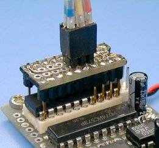

Simple AVR Programmers
October 3, '99
Last update: September 23, '10

October 3, '99
Last update: September 23, '10

These are simple AVR programmers. I designed and built four different programmers for various envilonments: LPT controlled parallel programmer, LPT controlled ISP adapter, COM controlled ISP adapter and COM controlled generic SPI bridge. Additionaly, COM controlled adapters can be used as a communication cable between host PC and target board, it is useful for debugging.
These AVR programmers have no controller on the programmer and directly controlled with port signals. Therefore, programming time is reduced shorter than any other programmers because there is not any communication delay such as command/result sequense between PC and programmer. These programmer can also be used with AVR studio :-).
If you have a JTAG download cable controlled via LPT port for Xilinx, Lattice or Altera devices, it can also be used to program AVR.
AVR has two different programming modes called Parallel Programming Mode (Parallel Mode) and Serial Downloading Mode (ISP mode).
At the Parallel Mode, the device to be programmed is put on the programmer's socket and +12 volts programming voltage is required to its RESET pin. Communicating between the programmer and the device is done in parallel programming commands, so that the programing speed is two times faster than ISP mode. This programming mode is used to pre-program many devices or/and ISP mode cannot use due to the board design. However, most programmers except STK500 seem not to support this programming mode.
At the ISP Mode, the device communicates via its SPI interface to program and verify. This mode requires only three signal lines without +12 volts programming voltage, so that it can also program in the terget system, this is called ISP (In-System Programming). However, the ISP mode cannot change fuse bits at some devces, and some devices don't have ISP feature. Such devices must be programmed in Parallel Mode. But most AVR programmers use this programming mode even if it has a socket, they have the same problem.
Additionally, there is serial programming mode using +12V programming voltage that called High-Voltage Serial Programming Mode. This programming mode is equivalent to the Paralell Mode and available in only 8/14 pin devices. For details on the each programming mode, please refer to the device data sheets.
Right image shows built paralell programmer, it is built compact by using many surface mount devices. Circuit diagram of this programmer is very simple but it supports both high voltage programming modes Parallel mode and HVS mode. This programming method is required when the following case.
Therefore the parallel programmer is not that required for most case, only an ISP adapter will do. However 8 pin devices will often require HVS programming mode in order to configure the reset pin as an I/O port.
This programmer is using a 20 pin ZIF socket for device mounting, so that it requires any socket converter when program not 20 pin devices (8,28,40). SOIC, TQFP, PLCC are also require socket converter for each package.
High level output voltage on the LPT port may not reach 3.5 volts on some PCs. In this case, a TTL-CMOS level converter, such as 74HCT541, must be put to the place indicated with a dashed line. The parallel programmer is controled with AVRPP.EXE(Win32).
This ISP adapter is designed to reduce cost and to be easy to build. The simplified adapters are not using any semiconductor part, port signals are tied to target device directly as shown in the circuit diagrams. Thus this adapter is very simple so that it will be built within several minutes, and will be good for evaluation use. But this programmer limits target supply voltage range to 4.5V-5.5V because they don't convert signal levels between PC and target, it may not fit to the target signal level.
This programming software supports five programmer types, original circuit, STK200 dongle and JTAG cables for Xilinx, Lattice, Altera devices controlled via LPT port. The connection between JTAG signals and AVR-ISP signals are: TDO-MISO, TDI-MOSI, TCK-SCK and TMS-RESET. In this case, the target supply voltage will able to be 3V-5V. The programmer type attached to the LPT port is detected automatically. The LPT port controlled ISP programmer is controlled with AVRSP.EXE(Win32).
This is an ISP adapter which is controlled via COM port. Signal levels of the RS-232C line is converted to the target level, so that target device can operate in entire range of the VCC. And also it can be used as an communication cable to communicate between host PC and terget program (this is explained in the following section). This ISP adapter will sufficient to develop most of the AVR applications.
Right image shows the built ISP adapter for COM port. It has a switch to connect/disconnect the ISP adapter from the target board. This feature is good for debugging process saied that "Load-Runner" (program/run again and again).
When build it, to put the level converter near the target board is better from viewpoint of stability and handling. I had built and used some ISP adapters and setteled this form. This ISP adapter is controlled with AVRSP.EXE(Win32) or avrdude 5.1+.
Recent desktop PCs in the market tend to omit legacy ports (COM/LPT), especially, the legacy ports on the notebook PC is completely eliminated and they have been replaced with the USB ports. The USBspi is a general purpose SPI bridge attached to USB port. On the SPI bridge R4, an AVR specific command is added and the programming time (Erase+Write+Verify) of 6.6 seconds at 32 Kbytes is achieved. It is two times faster than COM port adapter.
Right image shows the built SPI bridge. It is pretty small 46mm/15mm/6mm (L/W/T) because of using MLF packaged devices. The power supply can be selected out of "Powered from the target (3 to 5 volts)" or "Supply 5/3.3 volts to the target (can do depends on the target)". This enables to program/debug a target board without power supply if only there is a notebook PC.
Because it is named General Purpose SPI bridge, it can be used for not only AVRs but also generic SPI devices (limited to mode 0). This is an example to dump SD memory card. Ofcourse it will work with port controlled ISP adapter with small changes to SPI control module. Sep 8, 2007
There are some control programs for each AVR programmers and they run on the console window. They can also be used in quick Drag and Drop operation with proper PIF (DOS) or .ini (Win32) settings.
The main feature on the control programs is they can detect device type automaticaly, and act on the properties of the detected device. Therefore, only specifying the hex files to be programmed will do. Any device option is not required. The command line options also able to be set with PIF file or .ini file as default.
For parallel programmer, a DOS based test program which can manipulate any socket pin manually is available. For ISP programmer, avrsp -z outputs a test signal on the SCK line to examine the system compatibility.
When use an AVR with ISP mode, target board must be designed with consider ISP function, the ISP pins, RESET, SCK, MISO and MOSI must be reserved for ISP function. However, number of ports may be insufficient in actual application.
ISP pins will able to share both I/O and ISP functions when some terms are satisfied. When using any I/O pin that also assigned to ISP function, the following must be observed.
Atmel recommends this pin layout, 3x2 header pin spacing of 2.54 milimeters. When build ISP cable or circuit board, this pin layout of the ISP connector is recommended.

When the target board has no ISP connector, it will able to ISP action with a contact plobe like shown in the right image.
This is a special feature on the COM controlled ISP adapter. This ISP adapter can be used to communicate between host PC and target board with any terminal programs because contrive to assignment of control signals as COM port. Thus, it can directly communicate or debug with the ISP cable. To enable this feature, following conditions must be satisfied.
Microchip has lauched 16-bit PICmicro family. It is powerful microcontrollers like AVR and somebody in the AVR users will be interesting in those chips. I created a PIC programmig tool using AVR-ISP cables. This will be suitable for AVR users who is going to try 16-bit PICmicros briefly.
The programming tool pic24sp is based on avrsp and it has the same function and usage. The supported devices are PIC24F, PIC24H and dsPIC33F. When use an SPI bridge, it must support PIC extension command set (R3 or later). 8-bit PICmicros are currently not supported but when the devices are supporting LV-ICSP function, they will able to be programmed by some modifications to the programming tool. The devices that require a high-voltage on the MCLR pin during ICSP, like dsPIC30F and old PICs, cannot be suppoted. The serial communication via an ISP cable is still supported with a consideration, target device must drive the data line in Pch open-drain (Mark=H-Z, Space=High) because the communication is done via a common data line. Dec 10, 2007


{kind=link}
{kind=link}
{kind=link}
{kind=link}
{kind=link}
{kind=link}
{kind=link}
{kind=link}
{kind=link}
{kind=link}
{kind=link}
{kind=link}
{kind=link}